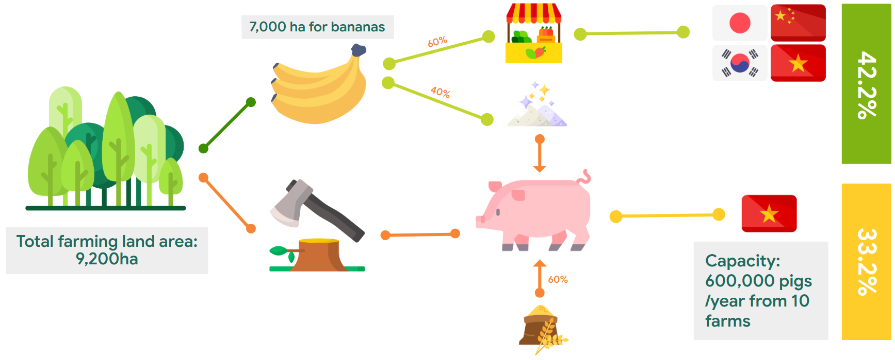
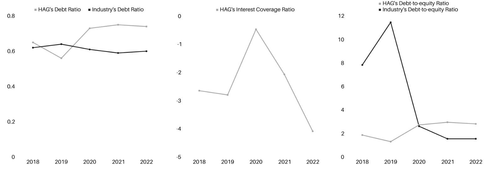
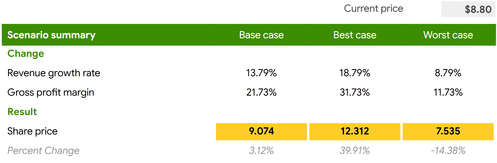

Stock analysis & Value-at-Risk estimation for major US tech companies
Abstract
In this report I will be analysing Hoang Anh Gia Lai (HAG) business operations,
financial health, and
stock performance. I initiate coverage on HAG with a BUY Recommendation
based on a target
price of 11,220 VND, implying a 28.9% upside to the last close of $8,700 VND
as of 10/11/2023.
This implied share price was arrived at through a weighted mix of DCF, APV,
and relative valuation
models.
1. Introduction
1.1. Company overview
Hoang Anh Pleiku Private Enterprise was founded in 1993 by Mr. Doan Nguyen
Duc and transformed
into Hoang Anh Gia Lai Joint Stock Company (HAG) in 2006. Since then, HAG
has been operating
as a multi-industry corporation, with its main industry being agriculture.
Besides, the company also
maintains a number of other supporting industries such as trading and
services, hospitals, and sports.
In particular, HAG is a significant agricultural exporter, with its major
markets being China, Japan,
and South Korea. In terms of HAG’s shareholders, Vietnamese investors
account for the majority at
97.22%, and the remaining 2.78% are foreign shareholders (Figure 1).
Since 2016, the company has been engaged in a strategic transformation,
focusing its activities on
three primary areas: (1) banana farming, (2) pig farming, and (3) durian
farming. In the fruit sector,
with 1,000 hectares of durian, the company plans to harvest significantly
from next year, keeping up
with low-cost prices and ensuring profits. Stable selling price on the
domestic market is an important
advantage, not falling below 20,000 VND/kg. At the same time, banana and
durian exports, especially
to the Chinese market, are a key source of income, with a sharp increase in
revenue and output expected
in the last quarter of 2023.
Due to sluggish market demand, hog prices fluctuated between VND 49,000 and
VND 55,000 per
kilogram from January to May, falling below the production cost of
approximately VND 55,000 per
kilogram. Consequently, many small-scale farmers either reduced or abandoned
their herds. This
has led Vietnam to transition towards large-scale, industrialized commercial
farming, adopting a fully
integrated 3F model (Feed-Farm-Food), which currently holds over 60% of the
market share. If the
cost of pigs rise to VND62,000/kg, I anticipate that Vietnam’s CPI will
experience an additional
0.6% increase (Figure 2).
Additionally, HAG also implemented a quality management system and
international standards in
fruit production, ensuring compliance with demanding market requirements in
Japan, Korea, Singa
pore, and Europe, such as Global GAP standards or equivalent. According to
the 2022 annual report,
the total revenue HAG earns from fruit is 2,156 billion VND, accounting for
42.2% of total revenue
and 33.2% of total revenue with 1,697 billion VND from pigs.
1.2. Market overview
The livestock sector in Vietnam faces various difficulties in the initial
half of the calendar year 2023.
These challenges encompass subdued demand, heightened input expenses,
ongoing disease threats,
price instability in the market, and fierce competition from imported goods.
As per data from the
General Statistics Office (GSO), the total pig population experienced a 2.5%
growth, reaching 26
million pigs, while the live-weight production saw a 6.5 percent increase,
totaling 2.3 million tons by
the end of June 2023. Nevertheless, industry experts cast doubt on these
figures, estimating the actual
pig population to be around 23 million, significantly lower than the GSO’s
reported data.
Due to sluggish market demand, hog prices fluctuated between VND 49,000 and
VND 55,000 per
kilogram from January to May, falling below the production cost of
approximately VND 55,000 per
kilogram. Consequently, many small-scale farmers either reduced or abandoned
their herds. This
has led Vietnam to transition towards large-scale, industrialized commercial
farming, adopting a fully
integrated 3F model (Feed-Farm-Food), which currently holds over 60% of the
market share. If the
cost of pigs rise to VND62,000/kg, I anticipate that Vietnam’s CPI will
experience an additional
0.6% increase (Figure 2).
Diversification in the agricultural and livestock sectors, along with its
proactive ability to export,
puts HAG in a strong position in a developing rural economy and in the
context of strengthening
international market demand. Vietnam is one of the largest banana exporting
countries in the world
with suitable climate and soil conditions. Vietnam has always been one of
the leading banana exporting
countries globally with many different destinations around the world such
as: China, Laos, Cambodia
and countries in the Middle East and Eastern Europe. In 2023, the durian
market in Vietnam has a
positive outlook with exports expected to reach a high level and have the
opportunity to compete with
Thailand in the durian industry. However, the banana market still faces many
difficulties and challenges
such as the need to improve infrastructure and transportation to ensure
timely transportation of
bananas to export markets. In 2021, China accounted for the largest share of
Vietnam’s banana
exports, with a share of 87%, equivalent to 200 million US dollars (Figure
3).
1.3. Project overview
Project problems
Given the recent changes within HAG, marked by the company’s concentrated
emphasis on banana,
pig, and durian farming, along with noteworthy revenue expansion and
considerable reduction in debt,
albeit persisting within the high leverage warning zone. HAG’s two prominent
problems have been
identified, namely: (1) the effectiveness of HAG strategic performance and
competitive positioning
is uncertain, especially given the firm’s new ventures into pig and durian
farming and (2) despite
impressive revenue growth in 2022 and the first half of 2023, liabilities to
assets and equity remain
high, indicating HAG’s high risks to creditors and investors.
Project objectives
This project has four key objectives: (1) to evaluate HAG’s strengths,
weaknesses, opportunities,
threats, and competitive dynamics, (2) to assess the firm’s current
financial health, (3) to examine
whether HAG’s stock price is fairly valued within the context of the
prevailing market dynamics and (4)
to identify and assess potential risks faced by HAG and recommend effective
risk mitigation strategies.
Project scope
HAG’s publicly available financial data were collected over the period from
2018– 2022 for analysis.
Moreover, the scope of my project narrows its focus to HAG’s largest revenue
drivers, namely (1) fruit
production (bananas and durians) and (2) pig farming.
2. Data and methodology
2.1. Data
This project utilises publicly-available data of HAG from secondary sources,
which can be categorised
into (1) internal and (2) external channels. A crucial internal source of
information referenced through
out this project is the official website of HAG, accessible via
https://www.hag.com.vn. It provides
updates on the HAG’s financial health, operations, and management. Since
these reports are provided
by the company itself, they are ensured of reliability and accuracy.
To offer a more comprehensive and market-oriented perspective on the firm’s
performance, external
sources of data have also been integrated. For example, Vietstock and
TradingView are two platforms
that offer the latest information regarding HAG’s as well as its
competitors’ stock performance. Besides
providing ease of access and data extraction, these external sources also
facilitate cross-verification of
data across different sources.
2.2. Methods and rationale
* Might consider skipping this section, as it simply explains the
rationale behind the chosen methods, supported by academic
literature.
SWOT analysis involves examining a company’s 4 areas:
‘strengths’, ‘weak
nesses’, ‘opportunities’, ‘threats’. Strengths and weaknesses
constitute internal attributes within HAG,
while opportunities and threats pertain to external factors in the
environment. SWOT Analysis aids in
the evaluation of an organisation’s resource capabilities and
deficiencies, along with its market oppor
tunities and external threats to future prospects (Thompson et al.,
2007). Henceforth, it yields insights
into (1) aligning the HAG’s strategy and (2) determining the
immediacy for the firm to address its
resource shortcomings and safeguard against specific external
threats (Thompson Strickland, 2001).
However, the model has several limitations. Firstly, its static
nature can make it inappropriate espe
cially in environments marked by constant change and fierce
competition. Mintzberg (1990) criticises
its lack of forward-looking perspective, potentially hindering the
formulation of future-oriented strate
gies. Furthermore, variable categorisation challenges and the
absence of a quantitative benchmark
impede a comprehensive evaluation of performance and competitive
gaps (Mintzberg, 1990).
Porter’s five forces analysis was also included, which
identifies and analyses
f
ive competitive forces shaping the agricultural business industry.
The five forces are: (1) industry
rivalry, (2) supplier bargaining power, (3) customer bargaining
power, (4) threat of substitutes, and
(5) threat of new entrants.
The model, while provides a more comprehensive picture of HAG’s com
petitive positioning than SWOT Analysis, also has limitations.
Similar to the SWOT model, Porter’s
framework is static, providing a historical snapshot and thus may
needs regular re-examination. Other
critics of the model suggests that it lacks strategic specificity,
offering less guidance for managers
(Dobbs, 2014) and its assertion that industry structure solely
drives competition, disregarding exter
nal influences can lead to potentially oversimplifying analysis
(Porter, 2008).
Financial ratios analysis
serve as a tool to assess a company’s relative position
compared to its peers or against its own historical performance over
time (Bakry, 2014). For HAG,
the focus lies on evaluating its profitability, liquidity, and
capital structure. These ratios (Appendix
9.7) are then benchmarked against industry peers, including DBC,
BAF, MML, PAN, LTG, and NAF
(Table 2). The comparables selection criteria include their industry
classification (agriculture produc
tion), comparable products and services and size, as measured by
market capitalisation.
Despite the
practicality and ease of computation associated with financial
ratios, it is important to acknowledge
certain flaws of using ratios for industry-comparison. The primary
challenge revolves around a re
liance on assumptions and estimates, introducing subjectivity into
assessments. Moreover, different
companies, even in the same industry, operate uniquely, making
direct comparisons less applicable.
Additionally, the overall accuracy of the underlying financial data
is critical, as inaccuracies can lead
to misleading conclusions.
Table 2: HAG Comparable Firms
Ticker
Company Name
DBC
DABACO Group Joint Stock Company
BAF
BaF Vietnam Agriculture Joint Stock Company
MML
Masan MEATLife Joint Stock Company
PAN
PAN Group Joint Stock Company
LTG
Loc Troi Group Joint Stock Company
NAF
Nafoods Group Joint Stock Company
Given that HAG (1) presently has a high amount of debt, (2) pays no
dividends, and (3) exhibits rela
tively volatile earnings, the implied share price for HAG will be
compute through a mix of intrinsic and
relative valuation approaches, including the discounted cash flow
(DCF) model, adjusted present value
(APV) model, and comparable company analysis (CCA). After the
allocation of suitable weightings
to each valuation method, the project combines these models to
formulate a comprehensive estimate
of HAG’s value.
Discounted cash flow (DCF)
For DCF analysis, I first forecast HAG’s revenue using simple
linear regression applied to historical data. Then pro-forma
statements are generated, and the Weighted
Average Cost of Capital (WACC) as well as Terminal Growth Rate (TGR)
are computed under a set
of assumptions. The firm’s enterprise value is then determined by
discounted projected cash flow for
the year 2023- 2028, and the implied share price is obtained by
dividing this value by the number of
outstanding shares.
This cash-flow-focussed valuation method has been widely
acknowledged for its ease of application
and practicality in both industry and academia (Titman Martin, 2016;
Koller et al., 2020). However,
with the enterprise value being heavily influenced by the terminal
value, any inaccuracies in the
estimation of the WACC and TGR can greatly skew the results
(Pignataro, 2022). Another major
f
law of the model is its lack of consideration for a firm’s financial
distress and probability of default
(Koller et al., 2020). Note that I adopt the end-of-year convention
for this project, although the
mid-year convention are preferred by many to account for continuous
cash flows (Pignataro, 2022).
Adjusted present value (APV)
For companies carrying a substantial debt burden like HAG, its
intrinsic debt value may significantly diverge from its book value,
exhibiting fluctuations in tandem
with enterprise value. Models relying on the WACC such as the DCF
model are not highly effective
for firms whose debt-equity ratio undergoes constant changes and
thus maintaining a fixed WACC
assumption becomes inappropriate (Arzac, 1996; Titman Martin, 2016).
In such instances, the APV
model is preferred. It dissects cash flows into unlevered cash flow
and interest tax savings components,
providing an estimation of the firm’s enterprise value as the sum of
these parts. The implied share
price is subsequently derived by dividing the total value by the
number of outstanding shares. This
approach proves particularly advantageous in circumstances where the
dynamics of debt may vary
significantly.
Comparable company analysis (CCA)
Unlike intrinsic valuation methods (DCF, APV), relative val
uation relies on market data, comparing a company with similar firms
using observed transaction
prices (Titman & Martin, 2016). First, HAG’s comparable firms are
identified, and key metrics
(EV/EBITDA, P/E) are calculated for each. Averages of these ratios
are then calculated and applied
to HAG’s EBITDA and revenue for estimating its enterprise value.
Implied share price is obtained by
dividing enterprise value by its outstanding shares. CCA provides a
timely market perspective, validating DCF projections and offering
industry insights with well-constructed assumptions. However,
challenges include finding suitable comparables and potential skewed
results due to market fluctuations
(Koller et al., 2020).
Composite valuation
Previous studies have highlight the variability in results among
different
valuation methods, such as the one by Tiwari (2016). As each
valuation method has its advantages
and disadvantages, to enhance accuracy, I adopt a composite
valuation model that integrates value
estimates from multiple methods (Table 3). This approach, supported
by Yee (2004) and Vardavaki &
Mylonakis (2007), ensures that the implied share price incorporates
information from all the methods
considered.
Table 3: Composite Valuation Matrix
Method
Weighting
Discounted Cash Flow
20%
Adjusted Present Value
50%
Relative Valuation
30%
I assign a higher weight to the APV model than the DCF model due to
HAG’s existing high
level of debt. The collective weight assigned to intrinsic valuation
methods surpasses that allocated
to relative valuation, attributable to a predominant interest in
evaluating HAG’s performance over an
extended period of time rather than examining cross-sectional
differences among various stocks. Em
pirical studies, including those by Kaplan Ruback (1995), Berkman et
al. (2000), Kim Ritter (1999),
and Lee et al. (1999), affirm the superiority of intrinsic
valuations when used for such assessment.
Valuation risks
Beyond computing the company’s implied share price, I also analyse
its sensitivity
to risks through scenario and sensitivity analyses, thus providing
enabling better informed decision
making in scenarios with high levels of uncertainty (Gao et al.,
2016).
Scenario analysis
In my scenario analysis, I focus on revenue growth and the TGR as
key
variables. The analysis comprises three scenarios– normal case, best
case and and worst case, providing
insights into share price projections under diverse circumstances.
Sensitivity analysis
Sensitivity analysis explores variations in computed share price
caused by
shifts in HAG’s TGR and WACC. My aim is to identify the threshold at
which changes in WACC
and TGR would impact my investment recommendation.
Investment risks
Quantitative and qualitative risk assessment were performed to
evaluate HAG
investment risks. This involved analysing factors such as legal
risk, environmental risk etc. and also
computing quantifiable metrics such as Altman Z-score and Value at
Risk for HAG.
Altman Z-score model
Altman’s Z-Score model is a quantitative metric employed to
speculate
on the likelihood of a business initiating bankruptcy proceedings
within the next two years. The model
was developed by Altman (1968) as a measure of firms’ financial
stability. First, key financial ratios
were computed and subsequently, these ratios are assigned specific
weights derived from Altman’s
original formula (Table 4).
The limitation inherent in the model relates to the derivation of
the coefficients through multiple
discriminant analysis, as it involves a pronounced reliance on both
the economic context and the sector
in which the company operates in (Georgiev & Petrova, 2015).
Additionally, the original Altman’s
model, as presented in this paper, was formulated exclusively based
on the examination of listed
companies within the United States. Empirical investigations have
indicated that predictive efficacy
diminishes across different countries due to the variations in the
economic landscapes of each respective
country (Karas & Srbov´a, 2019).
Value at Risk (VaR)
Value at Risk measures a portfolio’s maximum downside risk an
investor
could expect (Dowd, 1998). This project employs two primary models
to evaluate, the (1) historical
approach and the parametric approach.
Historical simulation is a non-parametric method that takes into
account historical data of a firm to
estimate VaR without assuming statistical distributions, offering
simplicity. HAG’s share prices were
obtained over a defined historical period of 250 trading days. Then
I simulated hypothetical returns
based on the current portfolio weights and VaR estimates are derived
from the resulting histogram
of portfolio returns. One key advantage lies in its independence
from assumptions about statistical
distributions, avoiding the need for estimating volatilities and
correlations (Jorion, 2001). However,
major flaws of this model are its reliance on limited data sample
size and the assumption that history
will repeat itself, potentially leading to distorted VaR estimates
(Damodaran, 2007; Dowd, 1998).
For the the parametric method, I used Bachelier’s (1900) single-asset
model. Historical data is
used to estimate the mean and variance of the probability
distribution, assuming that past data is
indicative of future price movements to a certain extent. Once these
parameters are estimated, VaR
can be computed for a given confidence level (Cheung & Powell,
2012). Despite its simplicity, this
method may yield suboptimal VaR estimates due to violations of the
normality assumption for returns
(Cont, 2001).
Kupiec’s (1995) proportion of failure (POF) test were used backtest
the VaR models employed.
The POF test assesses whether the observed exceptions are within
reasonable bounds compared to the
expected occurrences. However, the POF-test exhibits two primary
drawbacks: statistical weakness
with small sample sizes, as seen in the project’s 250-trading-day
sample, and a focus solely on the
failure rate without considering the succession of occurrences,
potentially overlooking models that
produce serially dependent violations or clustered exceptions
(Campbell, 2005; Jorion, 2007).
3. Strategic analysis
3.1. Business model
Farming land constitutes approximately 75%, primarily dedicated to banana
cultivation. The trees
harvested from this land serve a dual purpose: non-banana-bearing trees are
processed into fibrous
pig feed, while bananas that meet the standards are sold, with 60% being
distributed domestically or
exported to key markets like China, Korea, and Japan.
Approximately 40% of bananas that don’t meet sales criteria are repurposed;
they are dried and
processed into protein powder for pig feed. These internal sources account
for 40% of the total food
expenses, with the remaining 60% being purchased externally. As of 2023, the
farm’s capacity stands
at approximately 600,000 pigs per year, all designated for domestic
consumption.
HAG follows the 3F model, which consists of:
1. Feed: This is a self-producing animal feed business that
ensures a complete nutritional balance
for each stage of animal development.
2. Farm: These are industrial-scale livestock farms where
animals are raised in closed and hygienic
environments, meeting sanitation standards.
3. Food: The pork meat is strictly controlled by producers
to meet the standards set by relevant
authorities and is completely transparent in terms of its origin.

Category
Details
Feed Factory
Factory with a capacity of 600 tonnes/day and 5 banana
powder processing chains
Farm
10 farms, 600,000 pigs/year
Food Retail
Outsourced slaughter and processing of meat to a third-party
under HAG’s supervision
Distribution
HAG’s Babi Mart stores; Not yet available in major retail
chains
3.2. SWOT analysis
Strengths
Currently HAG demonstrates its edge through its expansive fruit farms
spanning 10,000 hectares in
Vietnam, Laos and Cambodia. The strength of HAGs established brand
also contributes significantly
to its competitiveness by granting the company access to extensive
industry networks and bolstering its
bargaining power. Notably HAG successfully ventured into pig
breeding in 2018 resulting in a revenue
share by 2021. This achievement highlights the integration of pig
breeding into HAGs diversified
portfolio. With 10 established pig farming clusters and an annual
production capacity of around
600,000 pigs these numbers clearly showcase the companys size,
efficiency and solidify its position as
a major player, in the fiercely competitive agricultural sector.
Banana-fed pig, or ”Thit heo an chuoi” is a relatively unique
product known for its delicious taste and organic qualities,
receiving high praise and enthusiastic reception from consumer’s.
Since waste bananas from the fruit farming business serve as a
nutrient-rich source for pig feeds, by leveraging the unusable
resources, HAG is able to not only reduce production costs but also
capitalise on the sustainable, environmental-friendly models,
furthering its distinctive competitive advantage. In con nection
with the previous point, as a large company, HAG has the resources
to produce high-quality products in a sustainable way that meet
Global Gap standards or equivalent criteria, enabling exports to
demanding markets such as Japan, South Korea, Singapore, and Europe.
For over ten years HAG has been implementing restructuring measures
to enhance operational effi ciency, which has contributed to the
companys stability. The analysis of the data from 2018 2022 reveals
an improvement in HAGs debt ratios. When compared to the market
average HAGs debt ratio indexes demonstrate discrepancies. Notably
in 2019 HAG had a debt index (0.56) compared to its competitors in
the same industry (0.64). In 2020 HAG successfully reduced its debts
by 6 billion dongs, which is less than half of its liabilities, in
2018. These ratios indicate that HAG has effectively managed its
borrowing and bode well for prospects.
Weaknesses
The situation for HAG remains tough as there are large debt payments
and continuing high interest levels. In the recent past, HAG also
had to sell many properties to clear some debts; this results in
higher lending rates and low productivity. At the beginning, HAG
Agrico expanded its operations in rubber and oil palm cultivation
onto 85,000 hectares at Gia Lai, ak Lak, Laos and some Cambodian
parts. The rubber industry’s prices have been going up and down with
devastating consequences for this country. In order to deal with
this situation, Thaco was appointed a strategic investor in the
context of a finance re-structuration project. Therefore, HAG Agrico
was able to clear off debts totalling 5.7 trillion dong, together
with accumulated loss of 2.663 trillion as of September 30, 2020.
Also, the State Securities Commission has imposed on HAG a fine of 3
billions VND due to unreported stocks deals in connection with those
relating to HNG shares. Consequently, trade in HAG stock was
suspended throughout the subsequent five months.
The company’s marketing efforts in reaching and communicating with
customers remain suboptimal. This weakness in marketing affects the
company’s ability to effectively engage and inform its target
audience, potentially leading to missed opportunities for growth and
customer retention. This is exemplified by HAG meat brand Bapi,
which so far has not appeared in many retail stores and received
very little advertising on both traditional media and social media.
Opportunities
The pig breeding sector demonstrates significant domestic market
potential, with the market value of pork exceeding 10 billion USD
and an anticipated growth to 4.7 million tons by 2030. According to
VNDirect Research (2022), there is a lot of room for expansion in
the branded pork segment, which currently holds only 10% of the
market share. This domestic outlook is in line with global trends,
positioning Vietnam as the second-largest consumer of pig meat in
Asia. Additionally, bananas also display strong market potential,
with China displaying an annual demand for 20 million tons. HAG can
also strategically focus on cultivating durian, considered a highly
favoured, luxury fruit in China, and explores opportunities in the
Cambodian pork market.
The demand for clean meat is on the rise in Vietnam, driven by
factors such as increasing income, heightened nutritional awareness,
and health concerns post-African Swine Fever and Covid-19 (VNDi rect
Research, 2022). Thus, HAG’s Bapi meat brand is put forth to address
and align with the growing preference for clean meat. The 3F model,
emphasising Feed, Farm, and Food, ensures balanced nu trition,
hygienic conditions, and traceability in pork production. This trend
is thriving in Vietnam urban areas, facilitated by modern commerce
channels, making branded and traceable clean meat eas ily accessible
(VNDirect Research, 2022). Sustainable practices employed by HAG,
further position businesses adopting the 3F model for success in the
evolving Vietnamese pork market.
Threats
Weather and diseases are key factors influencing the operations of a
farming company like HAG. Farming companies in Vietnam all face the
unpredictability of both climatic conditions and disease outbreaks,
notably PRRS (Porcine Reproductive and Respiratory Syndrome) and
occasional Foot and MouthDisease outbreaks. For instance, the
resurgance of African Swine Fever in the southern provinces of
Vietnam has lead farmers to liquidate their herds, leading to a
surplus in the supply chain. This surplus then disrupts market
equilibrium and consequently negatively impacts the economic
viability of pig farming. On the global stage, the presence of
diseases impedes Vietnam’s ability to export pork, hindering the
growth and profitability of companies.
Interest rates can be volatile, and for a company with substantial
borrowing like HAG, this can pose a great threat as the company has
to pay an elevated amount of interest expenses.
Reflected in the firm’s latest failure to raise capital. HAG faces a
risk of not being able to fund growth initiatives and expand in the
market. In April of the previous year, it’s price was approximately
13,000– 14,000 VND, prompting an attempt to issue shares at 10,500
VND per share with the aim of raising 1700 billion VND to supplement
capital for subsidiaries and fulfill part of bond principal
obligations. Unfortunately, this plan faced setbacks as HAG’s stock
price subsequently declined, currently hovering around 7,000– 8,000.
Thus, there remains the risk of failling to obtain the adequate fund
and support for HAG.
There is intense competition with the involvement of major players
such as C.P., Masan, and Vissan. Even large steel industry
enterprises like Hoa Phat have entered this market. To rapidly
increase their scale, some companies choose to expand production
through farm leasing or third-party outsourcing. In recent years,
the agricultural sector, which once appeared as a promising
opportunity, has now transformed into a potential threat due to
heightened competition. As Vietnam continues to integrate into the
global commodities market, the landscape has become increasingly
competitive, putting pres sure on established players like HAG. Many
major Vietnamese conglomerates have shifted their focus from
traditional real estate to invest in agriculture, intensifying the
rivalry within the industry, with significant stock market players
like Hoa Phat, Vingroup, and FLC entering the agricultural sector.
The influx of smuggled pork from Thailand and Cambodia, which comes
at lower prices, also created additional competitive pressures
(Hoang, 2023).
As a business in the agricultural sector, the unpredictable
fluctuation of food prices poses a notable difficulty to HAG. KB
Vietnam Securities Company suggests that livestock feed prices are
likely to exhibit a slight decrease in the near future when the
official reduction of taxes on corn and wheat is approved. Still,
livestock feed prices are unlikely to decrease significantlyand will
remain relatively high compared to the 2018-2019 period due to
ongoing high input costs. This threat is furthered by the sharp
increases in transportation costs which have driven up the prices of
imported raw materials, and although the situation has shown some
signs of improvement, it may not be fully resolved in the near term.
3.3. Porter's five forces analysis
The Vietnamese meat sector faces intense industry rivalry, marked by the
popularity of the 3F business
model and HAG competing with key domestic counterparts like BAF. Bargaining
power of suppliers
is low, given the undifferentiated nature of inputs. HAG’s bargaining power
with buyers is moderate
due to consistent demand for essential goods, but pricing limitations on
non-branded products.
The
threat of substitutes is high, especially for non-branded products, furthered by
HAG’s limited presence
in major retail chain. The threat of new entrants is low, as barriers related to
acquiring farmland,
establishing integrated systems, and adhering to quality standards demand
substantial investment and
time.
4. Financial analysis
4.1. Profitability
When the pandemic strikes in 2020, the ROE ratio of HAG varies and shows a
warning decrease of-6.4%. However, the indexes rebound to 0.69% and 5.68% in
the following years, particularly in 2022
when the firm’s ROE ratio surpasses the market average. The ROA and net
profit margin ratio of
HAG also encountered a positive momentum in the ensuing years. It is
observed that since HAG
switched its investment focus to fruit and livestock production, the
company’s operating profitability
has significantly improved. Thus, HAG’s profitability ratios indicate
prospective positive and reverse
improvements despite fluctuations in the first half of the examined period.
4.2. Liquidity
The current ratios of HAG fluctuate around 1, with a slight increase in 2021
and 2022 (1.04 and
0.87, respectively). However, despite the initial decline, HAG’s quick ratio
skyrockets to 0.98 in 2021.
Compared to the industry average, HAG’s quick ratio shows no significant
difference in recent years,
thereby causing positive changes in the near future. Overall, to fortify its
financial position, HAG is
progressively enhancing cash-generating and liquidity capabilities.
4.3. Capital structure
Even though a downward tendency in HAG’s liabilities is observed, the amount
remains huge. The
debt ratios fluctuate around 0.7, which is considered to be an adequate
number. Notably, the interest
coverage ratios display negative values in 2020, peaking at roughly-1.88.
before increasing rapidly to-0.13 and 1.3 in the subsequent years. These
metrics indicate that the company should employ more
techniques for adjusting leverage to progressively reduce its debt loans.
Additionally, despite the stable debt-to-equity ratios, the debt statistics
highlight HAG’s major debt utilisation compared to the industry average.
Although there have been positive momentums of
the firm in the recent period, HAG needs to manage its debt load more
effectively in order to improve
its financial stability and minimise possible hazards.

4.4. Market value
In general, HAG’s price-earnings ratio ratios underwent considerable
fluctuation throughout the time
frame. The ratio sees a sharp decline of 3.89, hitting the most significant
peak of 60.42 in the following
year before dropping to approximately 7 as the firm enters 2023. On the
other hand, the company’s
market-to-book ratios are maintained at roughly below 1 over the examined
period, revealing that the
company is being undervalued.
5. Stock valuation
5.1. Discounted cash flow (DCF)
For the WACC, I calculated the cost of equity to be 9.80% using the CAPM
method, with the
risk-free rate and market risk premium matching Vietnam’s 2022 averages. I
estimated the TGR
at 7.26%, based on two growth metrics: (1) the long-term average GDP growth
rate (CAGR 2023- 2028) and (2) the long-term average growth rate of the
Vietnam agriculture sector (CAGR 2023
2028). HAG’s implied share price was calculated to be 9,074 VND using the
DCF model.
5.2. Adjusted present value (APV)
5.3. Comparable company analysis (CCA)
For each of these comparable, two key valuation metrics are calculated:
EV/EBITDA ratio and the P/E ratio.
The implied stock price from the EV/EBITDA method is range from 6,789 VND to
21.5005. Additionally, with median ratio of 7.48x, the estimated share price
is nearly 15,317VND. For the P/E method, the price scale is evaluate between
5.586 VND and 11.185 VND. The P/E method shows the median price is
approximately 8,749 VND, with ratio of 7.19x. The ultimate result of implied
stock price when using relative valuation equals the average of the two
methods above, which is around 12.033 VND.
5.4. Composite valuation model
6. Risks
6.1. Valuation risks
Sensitivity analysis
The WACC and TGR are sensitised as key drivers of my DCF sensitivity
analysis model and flexed in +/-0.10% increments to reflect noise in economic
activity. A 10 bps in
WACC drives a +44.60%/-34.61% and a 10bps change in TGR drives a +46.36%/-35.99%
change in
implied share price, indicating highly material sensitivity. 60% of sensitised
values affirm a buy/strong
buy recommendation. Holding WACC constant sees share price ranging from 3,200
VND to 18,904
VND (3/5 values a buy); holding TGR constant sees a smaller variation from 3,426
VND to 18,533
VND (3/5 indicative of a buy). Considering a last close of 8,700 VND, either a
10bps decrease in the
WACC or a 10bps increase in TGR would prompt a SELL of HAG’s share.
Scenario analysis
My analytical approach involves assessing three distinct scenarios based on
our
assumptions regarding both revenue growth rate and gross profit margin.
Relative to the prevailing
share price, I advocate a buy/sell recommendation for each scenario: a BUY
for both the bullish and
baseline cases, and a SELL for the bearish case. Notably, in the worst-case
scenario, I anticipate a
13.89% decline in price, prompting a SELL recommendation. Conversely, under
favourable conditions,
investors are advised to consider a BUY, with the potential for profit
reaching up to approximately 40
%.

6.2. Investment risks
Corporate failure risk
The resulting Z-Score of 1.08, as per Altman’s (1968) framework, places HAG
in a distress zone,
indicating a moderate level of financial risk. Notably, X4 (Market
Capitalization / Total Liabilities)
at 0.60 and X5 (Sales / Total Assets) with a coefficient of 0.99 might raise
concerns as they contribute
less than other factors, indicating HAG’s weaker market valuation in
relation to liabilities and lower
sales with respect to total assets.
Market risk
a) Calculating marketing risk
The closing price on October 11, 2023, stands at 8,700 VND. The calculated
Value at Risk (VaR)
at a 95% confidence level provides insights into the potential maximum loss
that an investor might
encounter under adverse market conditions.
Historical model |
For the Historical VaR model, the figure of-430.87 VND signifies that, based
on
past market behavior, there is a 5% probability that the portfolio’s value
could decline by up to 430.87
VND or more.
Parametric model |
Similarly, the Parametric VaR, with a value of-411.819 VND, employs
statistical
parameters to estimate potential losses. This figure indicates the maximum
expected loss at a 95%
confidence level, considering the assumed distribution of returns and
associated parameters.
b) Backtesting marketing risk
The Kupiec POF test has also been employed to evaluate the adequacy of VaR
models in capturing
exceptions, comparing the observed and expected number of exceptions at
different confidence levels.
The hypotheses are as stated below:
H0: The VaR model is accurate; the number of exceptions
follows the expected frequency
or is less than or equal to the expected frequency. H1: The VaR model is inaccurate; the number of exceptions
exceeds the expected frequency.
Historical model |
At all conventional confidence level, the p-values exceed the significance
level
of 0.05. Therefore, I fail to reject the null hypothesis, suggesting that
the Historical VaR model
adequately captures the observed exceptions at the specified confidence
levels.
Parametric model |
While the p-values for the 90% and 95% confidence levels are above 0.05,
indi
cating a failure to reject the null hypothesis, the p-value at the 99%
confidence level is 0.0054, falling
below the significance level. Thus, I reject the null hypothesis at the 99%
confidence level, suggesting
that the Parametric VaR model does not adequately capture the observed
exceptions at this level.
Commodity price volatility
Because HAG is mainly an agricultural production and business company, in
which goods account for
a large proportion of revenue and costs, price fluctuations of commodities
such as bananas, pigs, durian
and animal feed could have a significant impact on company profits. The
prices of HAG’s products are
linked to the world market, especially China. However, that becomes a
potential risk when exporting
because the Chinese market itself has been developing strongly and has many
opportunities. In the
f
irst half of 2023, the prices of most of Vietnam’s key agricultural products
have risen significantly
due to a shortage of supply, while importing countries are increasing their
demand for food reserves.
Consequently, during the latter six months of 2023, the prices of these
major agricultural products
may continue to remain high, benefiting export businesses. This also
presents an opportunity for the
agricultural sector to support economic recovery in the final months of the
year (Linh, 2023). The
company manages this risk by utilising technology to achieve optimal
efficiency, ensuring a safe and
healthy profit margin for its products during economic downturns, and
diversifying its export markets
to hedge against the risk of market price fluctuations.
Exchange rate risk
Exchange rate risk relates to the risk that alterations in currency exchange
rates may impact a com
pany’s operation and profitability. HAG’s business activities generate
transactions in different cur
rencies because the Company operates in three countries: Vietnam, Laos and
Cambodia, expenses in
each country are paid in local currency. Exchange rates of currencies used
in main transactions in
Laos and Cambodia may increase compared to Vietnam Dong, increasing
operating costs and affect
ing the Company’s profit performance.
In the second half of 2023, experts predict that the period
of strong fluctuations in the US dollar has ended, the USD/VND exchange rate
in the last 6 months
of 2023 will continue to be stable (VNA, 2023). Although this is good news,
since the majority of
HAG’s exports are directed to the Chinese market, relying on only one market
without diversification
can increase risks for HAG. Therefore, implementing risk prevention
strategies is necessary to prevent
major fluctuations in exchange rates that may occur in the future.
Interest rate risk
Considering (1) the nature of HAG’s agricultural projects, which entail
substantial capital investments
over an extended time frame and (2) its existing high leverage, comprising a
significant portion of bank
loans and corporate bonds with floating interest rates, an increase in
interest rates could lead to higher
interest expenses, potentially posing challenges for HAG.
To mitigate this risk, the group has adapted
its capital structure according to each stage of its operation cycle. Apart
from securing capital through
loans and regular bonds, HAG has also raised funds by issuing shares and
convertible bonds to both
domestic and foreign investors at favourable, stable interest rates that are
not significantly impacted
by volatilities in interest rates.
Legal risk
HAG is a listed enterprise, so the group’s business activities are governed
by the Enterprise Law and
legal documents on securities and the stock market. The company’s management
and business activities
will be affected by changes in laws and policies. Besides, the agricultural
market is also influenced by
barriers imposed by importing countries. In Vietnam’s agricultural sector, I
face many legal risks.
One of the main challenges is regulations on land use rights, which can
hinder the implementation
of large-scale startup projects.
The fact that agricultural land areas are often small and unevenly
distributed makes it difficult to accumulate and concentrate land to
implement large-scale projects.
Furthermore, the lack of legal support in leasing land or contributing
capital with land use rights
creates instability in asset management (Quang Huy, 2017). HAG has built a
legal department to
regularly update changes in laws and legal impacts to limit related risks.
Environmental risk
Natural disasters such as fires, droughts, floods, etc., pose significant
threats to an agricultural company
like HAG since they can destroy or severely damage crops and livestock,
leading to significant financial
losses. In response to this risk, HAG states that they are implementing
advanced technology for
forecasting natural disasters, allowing for proactive response measures.
Additionally, they assess the
probability of risks and potential damage for each sector, and based on this
analysis, decide on the
suitable insurance strategy. According to the National Center for
Hydrometeorological Forecasting,
the El Nino phenomenon (warm phase) has appeared in Vietnam.
It is forecast that the El Nino
phenomenon will continue to develop from June to the end of 2023 and
maintain until 2024 and the
peak time of El Nino occurring during the season is from November 2023 to
January 2024 with a
probability of increasing intensity about 73%, the probability of reaching
average intensity is about
over 95%. This will have an impact slightly on the agricultural sector and
localities are encouraged to
make policies to proactively adapt agricultural production (Ch´ ı Linh,
2023).
Biological threats such as African swine fever, foot-and-mouth disease, and
blue-ear disease also
significantly affect HAG as well as the livestock industry across the
nation, necessitating rigorous
control efforts involving local authorities and agencies (Sy, 2023). It is
recommended that HAG
continuously monitor the use of vaccines as recommended by the Department of
Animal Health as well
as maintain their strict safety protocols to prevent outbreaks in their pig
farming facilities.
7. Conclusion
My analysis indicates a promising future trajectory for HAG’s recovery
starting in 2024. Firstly, the
company’s strategic move into durian cultivation allows it to tap into the
lucrative Chinese fruit market,
enhancing its revenue growth opportunity. Secondly, HAG’s ongoing financial
restructuring, marked
by a strong reduction in debt levels and positive trends in key
profitability ratios in 2022, underscores a
HAG’s commitment to improving its long-term financial health. Consequently,
I anticipate positive
earnings announcements and an upward trajectory in HAG’s share price over
the next 12 months.
HAG should urgently address its shortcomings, particularly its low brand
visibility by implement
ing more targeted and comprehensive marketing campaigns especially for its
banana-fed pig brand
Bapi. Increasing advertising efforts on traditional and social media
platforms and securing prominent
placement in major retail stores are initial steps that could significantly
elevate brand recognition
and consumer engagement. Additionally, considering the anticipated
profitability of durian exports
surpassing banana profits in the near future, HAG should emphasise its
durian exports to the Chinese
market to capitalise on the growing demand of the fruit. The company should
focus on maintaining
the high quality of its durians and establishing a strong market presence
through effective distribution
channels.